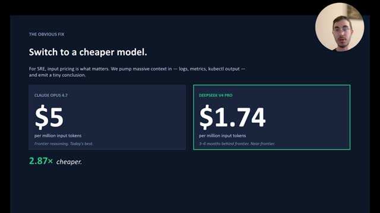
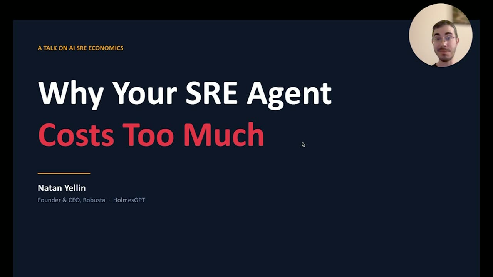
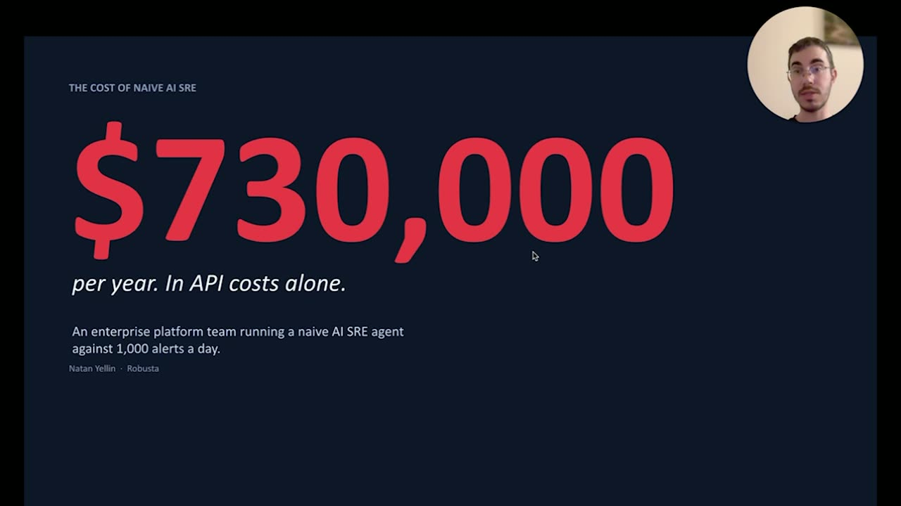
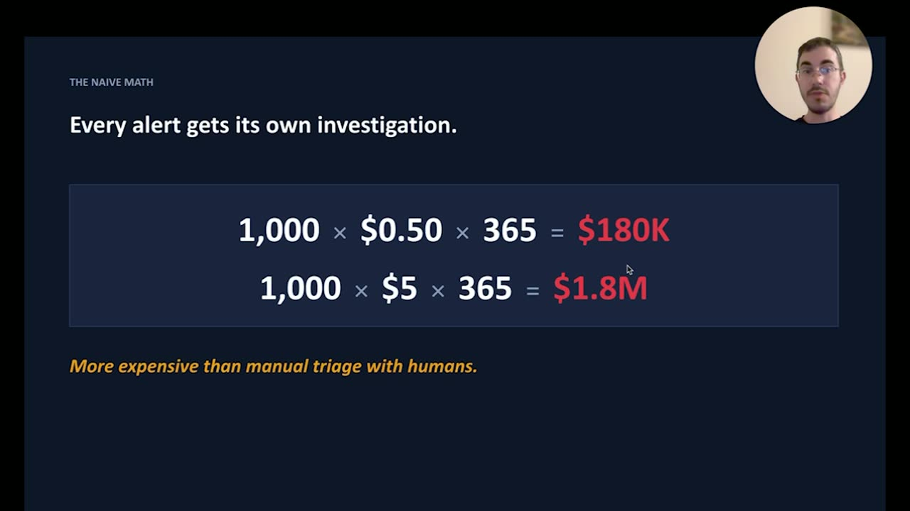
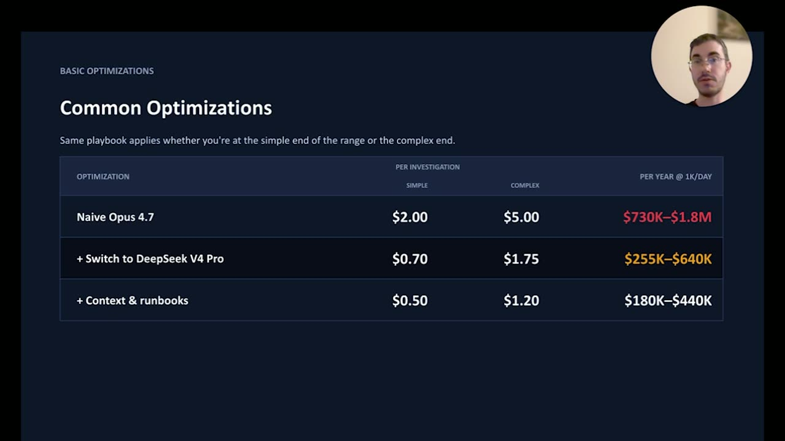
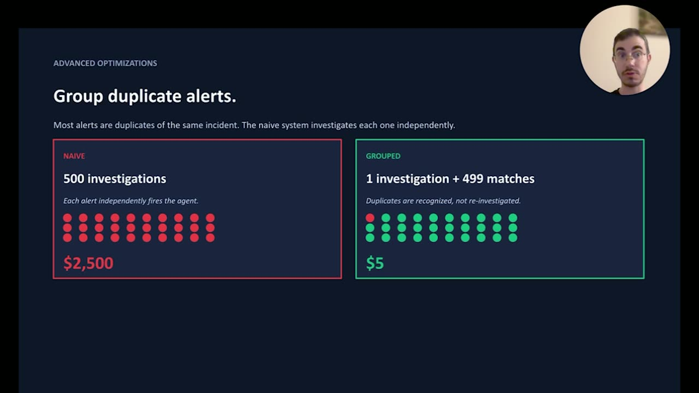
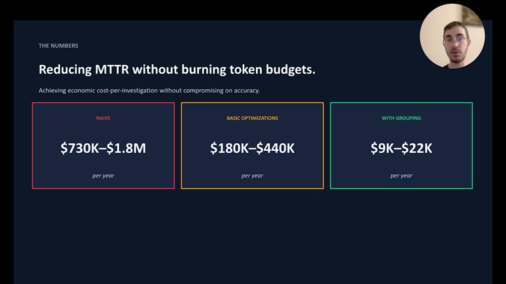

Run AI SREs without burning token budgets
Official description
Most AI SREs have an underlying cost per investigation of about $2 per alert. This makes it difficult for most enterprises to use AI SREs as a first-line solution for triaging alerts, based on token cost. In this session, we review the math and optimizations and show practival ways to bring the LLM cost of AI SREs into a manageable range, where running them on every alert becomes viable.
Summary
Overview
The session examines why AI SRE (site reliability engineering) agents are expensive to run at scale and presents practical optimizations to bring per-investigation token costs into a viable range. Natan Yellin argues that with the right architecture—cheaper models, persisted context, and LLM-native alert grouping—enterprises can afford to run AI investigations on every production alert rather than a selective subset.
Key announcements
- The "naive" cost of AI SREs is roughly $730,000/year for a typical Fortune 500 [00:00:43
 m05s
m05s m10s
m10s p05s
p05s p10s] — At ~1,000 alerts per day and ~$2 per investigation (a midpoint within a $180k–$1.8M range), the cost often exceeds that of human triage and becomes a non-starter.
p10s] — At ~1,000 alerts per day and ~$2 per investigation (a midpoint within a $180k–$1.8M range), the cost often exceeds that of human triage and becomes a non-starter. - Underlying investigation cost runs 50 cents to $5, driven almost entirely by input tokens [00:01:42
 m05s
m05s m10s
m10s p05s
p05s p10s] — Agents ingest large volumes of logs, metrics, and observability data, while output token costs remain minimal; observability vendors typically mark this up to around $25 per investigation.
p10s] — Agents ingest large volumes of logs, metrics, and observability data, while output token costs remain minimal; observability vendors typically mark this up to around $25 per investigation. - Cheaper models help less than expected [00:03:26m05sm10sp05sp10s] — Models such as DeepSeek V4 are roughly three times cheaper than Opus but less accurate, and often pull more (and wrong) data, eroding the per-token savings.
- Context and runbooks cut cost 20–30% [00:04:47m05s

m10sp05sp10s] — Supplying or auto-learning environment context, memories, and skills spares the agent from rediscovering the customer's observability setup on every alert. - LLM-native alert grouping delivers the largest savings [00:05:56
 m05s
m05s m10s
m10s p05s
p05s p10s] — Since most alerts during an outage are duplicates of one root cause, letting the LLM generate and persist grouping rules avoids linear per-alert cost while avoiding the pitfalls of deterministic rules.
p10s] — Since most alerts during an outage are duplicates of one root cause, letting the LLM generate and persist grouping rules avoids linear per-alert cost while avoiding the pitfalls of deterministic rules. - Hot context-window reuse leverages Anthropic's cache [00:07:25m05sm10sp05sp10s] — Maintaining one context window per root cause lets retriggered investigations reuse a still-cached window (Anthropic's five-minute cache), making them far cheaper than a clean window.
{kind=link}
{kind=link}
{kind=link}
{kind=link}
{kind=link}
{kind=link}
{kind=link}
{kind=link}
{kind=link}
{kind=link}
{kind=link}
{kind=link}
Topics covered
- Cost modeling of AI SRE investigations at enterprise alert volumes
- Input-token versus output-token cost dynamics in observability workloads
- Vendor markup practices in the observability market
- Trade-offs between premium and lower-cost models on accuracy and total data pulled
- Context injection, memory, and auto-built skills to reduce rediscovery cost
- LLM-native versus deterministic alert grouping and over/under-grouping risks
- One-context-window-per-root-cause architecture and prompt cache reuse
- Operational benefits of running investigations on every alert, including automatic escalation and prediction before incidents become P1s
Notable quotes
"It's cheaper to hire an offshore team and to have them triage the alerts."
"The big, big area where we see the biggest optimization is that most alerts are actually duplicates."
"When you can get the per-investigation cost down, then it's a no-brainer. You just run it on everything."
Products and tools mentioned
- Robusta
- Anthropic Claude Opus (4.7 and 4.6) [inferred]
- DeepSeek V4
- Anthropic prompt caching
Speakers featured
- Natan Yellin — CEO and co-founder of Robusta
Frames
{kind=link}

{kind=link}

{kind=link}
{kind=link}
{kind=link}

{kind=link}
{kind=link}
{kind=link}
{kind=link}

{kind=link}
{kind=link}
{kind=link}

{kind=link}
{kind=link}
{kind=link}

Transcript
Show / hide transcript (12,557 chars)
[00:00:00] NATAN YELLIN: Hello, everyone. [00:00:01] I'm Natan, and today, I'm going to talk about SRE agents and how [00:00:04] to build affordable SRE agents that you can actually run [00:00:07] on all your production alerts. [00:00:08] So it seems like everyone's building SRE agents nowadays, [00:00:11] and the math on them is actually fairly challenging [00:00:16] to make this work at scale. [00:00:18] So I'm going to walk through some of that and why they cost [00:00:20] so much and what you can do to fix that. [00:00:22] As background, I'm the CEO and co-founder of Robusta. [00:00:25] So we've been building SRE agents and shipping them [00:00:28] to customers from the Fortune 500 all the way [00:00:30] to tiny, tiny startups. [00:00:32] And we've been doing that now for quite some time. [00:00:34] So I'm going to share some of the lessons [00:00:36] that we've learned on that. [00:00:39] Okay. So the naive cost, if we take a typical Fortune 500, [00:00:43] you're going to have at least a thousand alerts per day [00:00:45] across different teams. [00:00:47] And if you want to run an AI SRE on all of those alerts, [00:00:51] the total cost on that with a naive solution is just too high. [00:00:54] I'm going to walk through all the numbers and how I get [00:00:56] to this giant figure here for $730,000 a year, [00:00:59] but it's fairly realistic. [00:01:02] And it matches what we tend to see [00:01:04] in enterprise after enterprise. [00:01:07] And the math behind this is you're looking [00:01:10] at a cost per investigation of around $2, [00:01:14] and you're looking at, say, a thousand alerts per day. [00:01:18] And if you run the math on that, I mean, [00:01:20] you very rapidly reach this massive figure. [00:01:23] So I'm going to walk through all those numbers in more detail. [00:01:27] And, of course, this number [00:01:28] for most enterprises is more expensive than the cost [00:01:32] of having humans triage alerts manually. [00:01:35] So it tends to be a non-starter. [00:01:37] So we're going to look at how you can bring that cost down. [00:01:40] So just to walk through more of the math. [00:01:42] So the typical cost for most vendors doing SRE agent [00:01:49] investigations is in the 50-cent to $5 range, [00:01:52] depending on how complex the underlying issue is. [00:01:55] Most of the vendors are charging a markup on that. [00:01:57] So most of the observability vendors, for example, [00:01:59] are charging around $25 per investigation. [00:02:03] And then you have vendors going all the way down to $15 [00:02:07] or $5 per investigation. [00:02:09] But if you ignore for a second the vendor markup, [00:02:11] then just the underlying cost on this tends to be 50 cents to $5 [00:02:17] for surprisingly almost everyone across the industry, [00:02:21] where that's driven by how complex the alert is. [00:02:24] So a simple investigation that's pulling relatively little data [00:02:27] would be 50 cents, complex investigation goes up to $5. [00:02:31] And very interestingly, these are all driven [00:02:33] by the cost on input tokens. [00:02:35] So like an SRE agent is pulling a ton of logs, ton of metrics, [00:02:39] ton of observability data, you pay a lot on the input token. [00:02:42] You tend to not pay at all on output tokens. [00:02:45] Or, I mean, you pay something, but it tends to be very, [00:02:47] very minimal in what you pay on output tokens. [00:02:51] Now, if we look at this, then just taking these two ranges, [00:02:56] you get this range of 180k to 1.8 million, [00:02:59] depending on the cost per investigation. [00:03:01] And taking a midpoint there of around $2, [00:03:04] then you get to that $730k. [00:03:07] And these numbers are, for most companies, [00:03:09] non-starters at that midpoint. [00:03:12] It's just not -- it doesn't really pay to do it [00:03:14] at that range, even though you're getting like faster MTTR. [00:03:18] It's cheaper to hire an offshore team [00:03:20] and to have them triage the alerts. [00:03:22] So we want to play with this math, [00:03:23] and we want to make that more attractive. [00:03:26] One thing you can do, it doesn't help as much as people think, [00:03:30] but one thing you can do is to use cheaper models. [00:03:34] So all this assumes Opus 4.7. [00:03:37] And Opus 4.7 is fantastic, or 4.6, right? [00:03:40] Really fantastic model. [00:03:42] If you look at the Chinese models and you look at models [00:03:45] like DeepSeek V4, then that's actually nearly three [00:03:49] times cheaper. [00:03:50] They're not as good. [00:03:52] We see accuracy does go down on the really complex things, [00:03:55] but they're fairly decent. [00:03:57] The math on this is still not good enough [00:04:00] to really get you where you need to be. [00:04:01] And what we do, we run with customers. [00:04:04] We actually don't use the Chinese models. [00:04:07] We use almost exclusively Opus family models because they give [00:04:12] that extra result and because we can get the cost [00:04:14] down in other ways. [00:04:17] But if you do look at this, [00:04:18] this is like a first really optimization, [00:04:20] just take a cheaper model, right? [00:04:24] So one other interesting, non-intuitive part [00:04:26] on this is actually sometimes the cheaper models, [00:04:29] even though the cost per token is going down, [00:04:31] what we see repeatedly in benchmarks is [00:04:33] that the overall price doesn't go down by as much [00:04:36] because the models tend to have to pull more data. [00:04:39] They're like trying to pull logs, [00:04:40] but they'll pull the wrong logs first. [00:04:42] So then they have to try again. [00:04:42] So they end up actually using more tokens, [00:04:44] even though the cost per token is cheaper. [00:04:47] Okay. Other optimizations. [00:04:48] So we spoke about switching to a cheaper model. [00:04:51] And then one other really common optimization is doing context [00:04:56] and runbooks. [00:04:56] So if you look at an SRE agent, [00:04:59] an SRE agent is investigating an alert. [00:05:04] And in a simple architecture with no memory and no learning [00:05:08] across investigations, then you need to rediscover [00:05:11] in every alert (inaudible) information [00:05:13] about the customer environment and their observability data, [00:05:16] and you have to rediscover how do you actually query [00:05:21] their tools. [00:05:21] What data lives in different observability vendors? [00:05:24] If you have multiple time series database -- one for the infra, [00:05:27] one for the applications -- what lives where? [00:05:29] So you end up having to rediscover that context [00:05:31] in each investigation. [00:05:32] So if you either give the agent context on its own, [00:05:35] or you have it auto-learn that context and generate memories [00:05:38] or auto-build skills, then you can actually get the cost [00:05:40] on that down by quite a bit, [00:05:43] typically as in the 20 to 30% range. [00:05:48] And you can get that down because the agent doesn't have [00:05:51] to relearn everything in each investigation. [00:05:53] So that's another good optimization. [00:05:56] But the big, big area where we see the biggest optimization is [00:05:59] that most alerts are actually duplicates. [00:06:01] So if you look at 500 alerts that are coming [00:06:04] in when there's a big production outage, [00:06:07] most of those are actually really duplicates [00:06:10] of the same cause. [00:06:12] So if you're running investigations naively [00:06:14] on each individual alert, [00:06:15] then you're just paying a linear cost on that. [00:06:18] But if you're able to do grouping, [00:06:20] then you're actually able to reduce that down dramatically. [00:06:24] Now, there's a lot of different ways that you can do grouping. [00:06:28] And the tricky part is to do grouping with LLM, [00:06:30] to do grouping that's LLM-native as opposed to doing -- [00:06:33] you don't want to do grouping [00:06:35] with old-school deterministic rules. [00:06:38] Because if you do that, then you're losing the whole benefit [00:06:40] of the AI SRE agent, and then you end [00:06:42] up grouping either too aggressively [00:06:44] where you're grouping together different things [00:06:46] that appear the same, but they're actually different [00:06:48] and have different root causes, [00:06:50] or you're not grouping aggressively enough [00:06:52] because you have different alerts that are coming [00:06:53] in with different names and from different observability systems, [00:06:57] and you'd want to group them, [00:06:58] but they don't match the deterministic rules. [00:07:00] So what we do, for example, is LLM-native grouping. [00:07:04] So we essentially let the LLM generate the grouping rules [00:07:07] and then persist those for a certain period of time. [00:07:09] And then we do a bunch of other optimizations on top of that. [00:07:12] But the core idea is to let the LLM actually control the [00:07:15] grouping mechanism and then to let the LLM control the policy [00:07:19] on what triggers reinvestigations [00:07:21] and what does not. [00:07:25] There are other optimizations also that tie into this. [00:07:28] So, for example, if you're doing it this way, [00:07:30] then you really have one context window per root cause. [00:07:34] And then even when new information comes [00:07:36] in on a different alert that retriggers an investigation, [00:07:39] you can reuse that previous context window. [00:07:41] And if that context window is hot, meaning it's still [00:07:44] in Anthropic's cache, Anthropic has a five-minute cache [00:07:48] hierarchy, so if the context window is still hot, [00:07:50] then that actually is way, [00:07:51] way cheaper than doing a clean context window. [00:07:54] So there are lots and lots of associated optimizations [00:07:57] that you can do around this. [00:08:00] When you start to apply these, [00:08:02] then you can actually get the numbers down to a very, [00:08:05] very reasonable range. [00:08:07] And the outcome of this is [00:08:09] that you can run AI SRE investigations [00:08:12] on every single alert. [00:08:13] So when you're at $5 per investigation, now you have [00:08:16] to start being really selective and choose [00:08:17] where you investigate and where you don't. [00:08:19] When you can get the per-investigation cost down, [00:08:23] then it's a no-brainer. [00:08:24] You just run it on everything. [00:08:25] And then the agent can then go and automatically escalate [00:08:29] to human when there's something that's really important [00:08:31] but initially looks like a low-priority alert. [00:08:34] So there are all these benefits if you can actually get this [00:08:36] in the range where you can run it on every single alert [00:08:39] because now you can drive outcomes [00:08:41] like having the AI do all sorts [00:08:42] of predictive stuff before problems become P1s. [00:08:46] Okay. So just to wrap up, AI SREs are extremely accurate. [00:08:51] We see that again and again. [00:08:53] But they can be extremely expensive, even more expensive [00:08:56] than having humans triage. [00:08:58] So to make this economic and to run this at scale, [00:09:02] you really have to start to apply those optimizations. [00:09:05] And if you're interested, please reach out to me. [00:09:07] My email is here, and I'd love to talk to you [00:09:09] about how we do this and how you can apply this [00:09:12] to your environment.